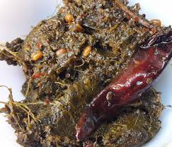

GONGURA CHUTNEY
Ingredients
Gongura pachadi also known as gongura chutney is a Andhra style side dish made with sorrel leaves,
red chilies, garlic and other basic spices. Red sorrel leaves are called as gongura
or puntikura in Telugu, pulicha keerai in Tamil, punde pale in Kannada and Ambaadi in Marathi, pitwaa in Hindi.

Process
1) Heat oil & add chana dal, garlic, dry red chillies, curry leaves, and asafoetida.
2) Fry until chana dal is fried and garlic turns golden brown.
3) Add the ground gongura mix.
4) Mix well.